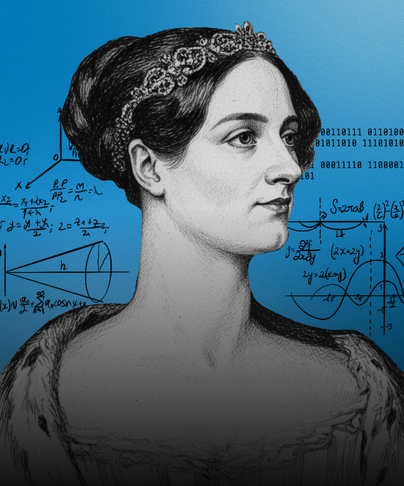

Ordem dos Mathemagos Olímpicos • Ciclo 2 (Setembro–Dezembro)
Desvende figuras, padrões e enigmas arcanos
Onde a lógica e a magia se entrelaçam.
NOVO CICLO • RANKING ZERADO
Grão-Conselho dos Magos
Instituto Federal do Paraná
Torre Assis Chateaubriand
Paridade • soma • invariantes
Uma maga possui 10 portais mágicos numerados de 1 a 10. Cada portal pode estar aberto (deixando passar energia) ou fechado.
Inicialmente, todos os portais estão fechados. A maga pode realizar o seguinte ritual: escolher dois portais consecutivos (como 3 e 4, ou 9 e 10) e inverter o estado de ambos (aberto → fechado, ou fechado → aberto).
Após executar o ritual exatamente 7 vezes, é possível que exatamente 5 portais estejam abertos?
Justifique sua resposta usando argumentos de paridade.
Prazo • Lua Cheia • 26/09 • 23h59
Pontuação: 1º lugar 4 pts • 2º 3 pts • 3º 2 pts • 4º e 5º 1 pt
Início do novo ciclo • Pontuação zerada
Ciclo 2 • Aguardando resultados
Pontuação final • Desafios 1 a 11
Os três melhores de cada mês recebem uma insígnia especial da Academia Arcana
